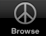

Welcome to the ikraigslist iphone application help page.
Please choose your section :
Welcome to the ikraigslist iphone application help page.
Please choose your section :
The ikraigslist iphone application has been designed with two principles in mind : simplicity and lightness but still being powerful enough to find what you want on craigslist.
The application allow you to browse the craigslist website, to search with all the standard craiglist criterias, to save your common searchs as well as saving interesting ads for offline browsing.
The application only parse the craigslist rss feeds and display it using all the iphone UI features.
The interface is based on a Tab Bar with 5 tabs, click on any of the images bellow to see help for the corresponding tab :
|  |
2 things needs to be configured before using the application :
For all the functionnalities of the application you need a connection to the internet (either though 2G,3G or Wifi), without an internet connection, you can only consult the ads you saved beforehand.
The browse page is made of three navigation views :
Home > Matched items lists > Ad detail view
In the Home you will choose your section and define the search criterias, you will also be able to save your search and to launch it.
In the Matched items lists you will see the items found on craigslist that are in the chosen section and match your search criterias.
In the Ad detail view you will see the details of the ad and you will be able to save it , to send it by email, to send an email to the ad poster and to see the items images (if any) in a iphone image slide.
If you always use the same criterias :
Firstly the application save your last search before quitting so that you will not have to enter it anymore the next time you start the application.
Secondly you can save a custom search if you will need to do it again, to do this just go in the browse tab, select your section and criterias and hit the save button, you will be asked for a name and then this name will appear in the list in the saved searchs tab. Just click on this item in the saved searchs list and this search is launched.
In the preferences tab, you can select the application preferences :
You can choose the craigslist location that should be used.
You can also select the maximum number of ads that should be returned by a search.
And finally you can erase your saved searchs, your saved ads and reset all the application settings (beware that if you reset all the application settings, you will also erase all the saved searchs and ads.
This document.
ikraigslist help - 2009